일일 콘텐츠
영웅의 공명
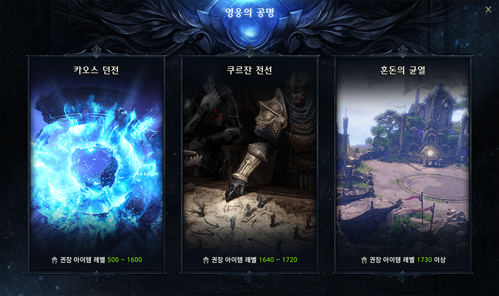
매일 충전되는 공명의 기운을 사용하여 입장 가능한 컨텐츠입니다.
레벨 구간에 따라 카오스 던전 / 쿠르잔 전선 / 혼돈의 균열로 나뉩니다. 이름만 다르지 진행 방식과 보상은 같습니다.
제한 시간 내 적들을 처치하고, 성장 구간에 필요한 다양한 재화를 획득할 수 있는 던전입니다.
보상으로 4티어 재련 재료(파편, 돌파석, 파괴석, 수호석), 젬, 유물 각인서 등을 얻을 수 있고 주기적으로 큐브 입장권을 획득할 수 있습니다.
가디언 토벌
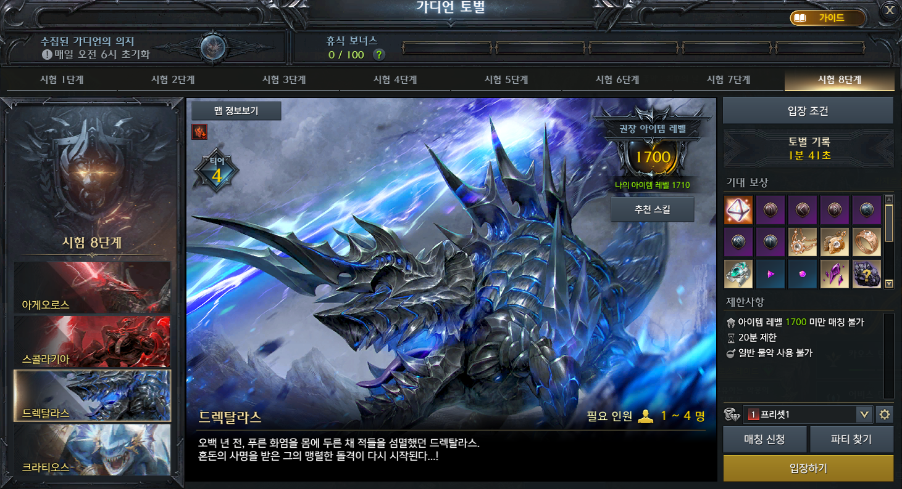
1일 1회 클리어 가능한 콘텐츠입니다. 쿠르잔 전선과 묶어서 일일숙제(일숙)으로 불립니다.
보석, 장신구, 팔찌, 젬, 유물 각인서 등을 얻을 수 있습니다.
편린
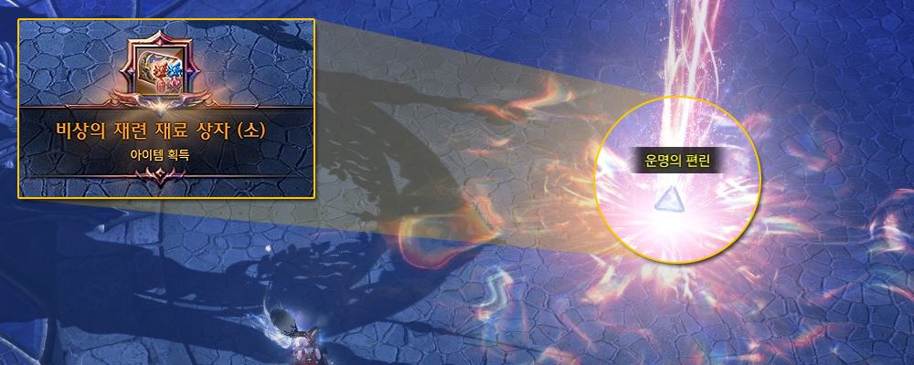
전선과 가토 중에는 낮은 확률로 편린을 획득할 수 있습니다.
편린에서는 실링, 골드, 전설 카드, 젬 등의 보상을 얻을 수 있습니다. 레벨에 따라 보상이 증가합니다.
골드 편린의 경우 최대 30만 골드 까지 나오기 때문에 일일 숙제는 꾸준히 돌아주시는게 좋습니다.
아제나의 축복

아제나의 축복은 캐릭터별로 적용되는 과금 시스템으로 구매 시 쿠르잔 전선과 가디언 토벌에서 '축복의 편린'을 추가적으로 획득할 수 있습니다.
일반 편린에 비해 골드가 나올 확률이 굉장히 높고 캐릭터 레벨에 상관없이 골드 획득량이 같기 때문에 과금을 할 생각이 있다면 1순위로 추천됩니다.
휴식 보너스
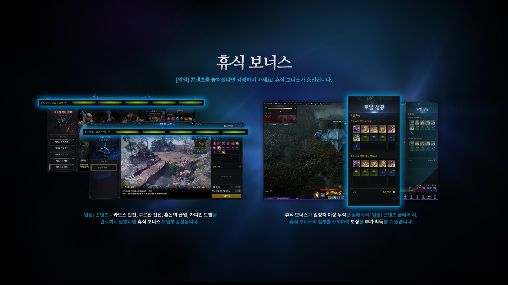
ⓘ 휴식 보너스란?
• 각 일일 콘텐츠는 수행 가능 횟수가 정해져 있으며, 초기화 시간은 매일 오전 6시입니다.
• 각 콘텐츠 초기화 시점에 남아있는 수행 가능 횟수에 따라 휴식 보너스가 충전됩니다.
• 휴식 보너스가 일정 수치 쌓여 있는 상태에서 콘텐츠를 진행하면 추가적으로 보상을 획득할 수 있습니다.
쉽게 말해서 3일동안 1번만 클리어하면 2회치 보상을 얻을 수 있는 시스템입니다.
일일숙제를 할 시간이 부족하거나 낮은 레벨의 캐릭터라서 보상이 적어서 시간이 아깝거나 하는 경우 사용하시면 되는 시스템입니다.
에포나 의뢰
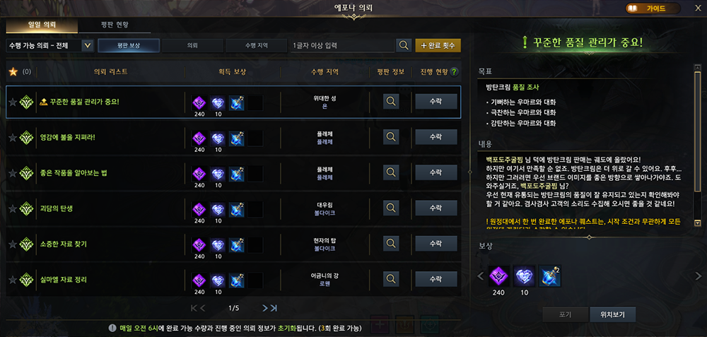
에포나 의뢰는 정해진 주기를 기준으로 수행 정보가 초기화되며, 갱신 시점에 재진행이 가능한 주기형 퀘스트를 의미합니다.
전투레벨 50 달성 후, 베른 성에서 '균열의 잔상' 퀘스트를 수행하다 보면 에포나 의뢰 콘텐츠가 개방됩니다.
캐릭터 당 1일 최대 3개까지만 완료 가능하며, 매일 오전 6시에 완료 가능 수량과 진행 중인 의뢰 정보가 초기화됩니다.
과거에는 에포나 의뢰를 통해 다양한 보상을 받을 수 있었지만 이제는 평판 보상 외에는 받을 수 없습니다.
아크 패시브 포인트, 스킬 포인트, 능력치 증가 물약, 위대한 미술품, 감정표현, 호감도 아이템 등 다양한 평판 보상이 존재하는데 내실 관련 평판을 최우선으로 진행한 후 이후에는 필요한 보상을 찾아서 진행하시면 됩니다.
생활
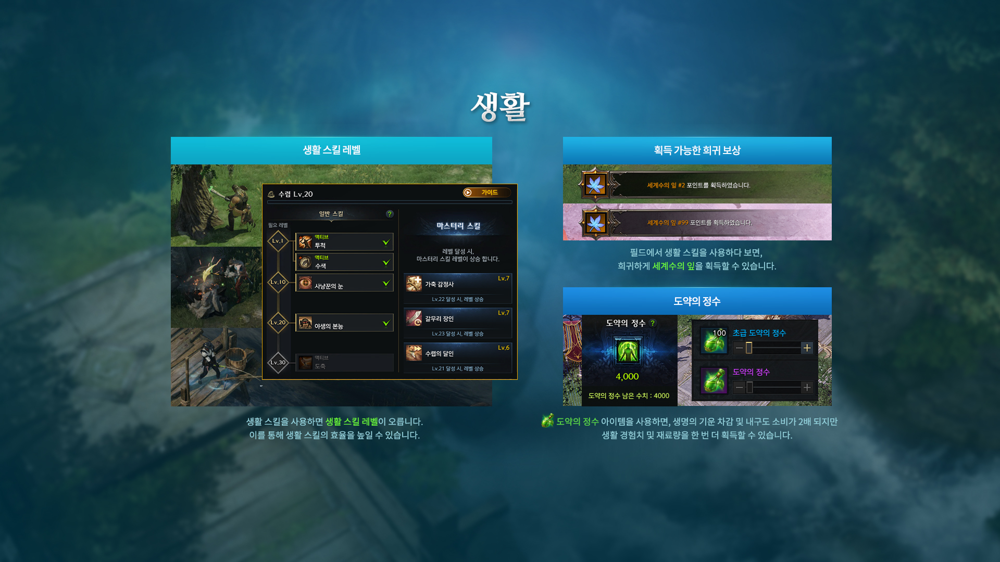
생활은 생명의 기운을 소모해서 생활 재료를 얻을 수 있는 콘텐츠입니다.
생활을 통해 얻은 재료를 판매하거나 영지에서 제작을 통해 아이템을 만들어 판매해서 골드를 벌 수 있습니다.
생활 스킬은 식물 채집/채광/벌목/수렵/고고학/낚시 6종류가 있는데 생활 스킬별로 생기를 소모하는 시간이 다르고 보상 획득량과 가격이 달라서 동일 생기당 획득 골드도 다릅니다.
생활 도구 옵션이나 생활별 획득 골드 정보는 ➡️ 로스트골드 ,➡️ 로면뭐하니 같은 외부 사이트에서 얻을 수 있습니다.
추천 생활 스킬
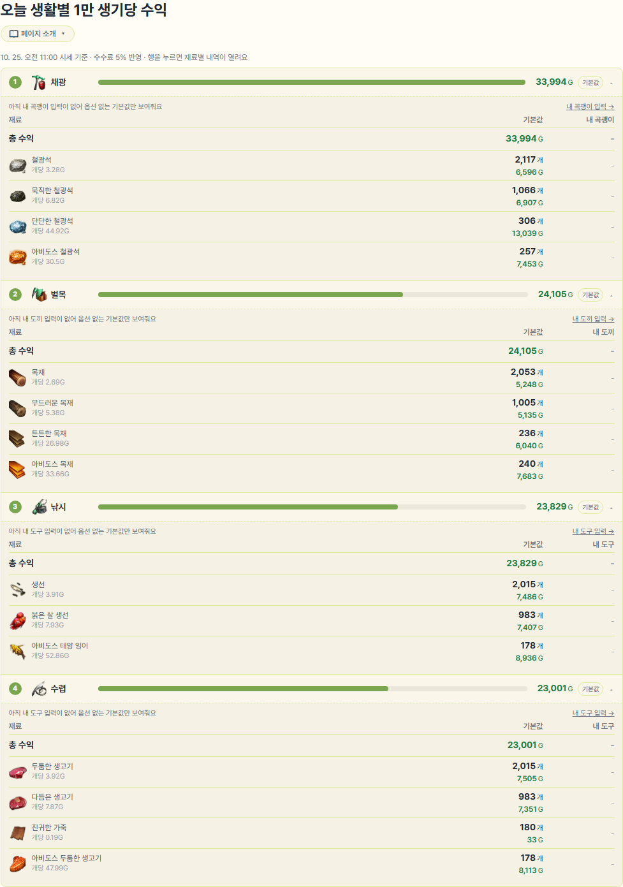
생활 종류별로 얻을 수 있는 재료가 다르고 재료별로 사용처가 달라서 매번 가격이 변동되기 때문에 수익 순위가 매번 바뀝니다.
예를 들면 신규 레이드 난이도가 높아서 트라이 횟수가 많아지면 음식 소모량이 늘어나면서 음식 재료인 수렵/낚시 재료 가격이 올라갑니다.
특정 레이드에서 빛나는 성스러운 폭탄이 필수로 사용되는 경우 빛성폭을 만들 수 있는 채광 재료 가격이 올라갑니다.
누군가가 에스더 무기를 올린다면 모든 재료 가격이 올라가기도 합니다.
매번 생활 재료 가격이 바뀌기는 하지만 일반적인 경우에는 생기 소모 속도가 가장 빠르고 보상이 좋은편인 벌목이 1순위로 추천됩니다.
벌목은 2인으로 진행할 시 속도가 빨라지고 생기 소모량이 2배가 되면서 가장 빠른 속도로 생기를 소모할 수 있습니다.
보상으로 나오는 재료는 융화 재료 제작에 사용하고 특히 희귀 재료인 '튼튼한 목재'가 일반, 고급 재료로 교환이 가능하기 때문에 가격이 비쌉니다.
벌목은 반드시 2인으로 진행을 해야 합니다. 혼자서 할 시 메리트가 전혀 없기 때문에 2인으로 하는게 싫다면 다른 생활을 하는게 좋습니다.
유물 도구
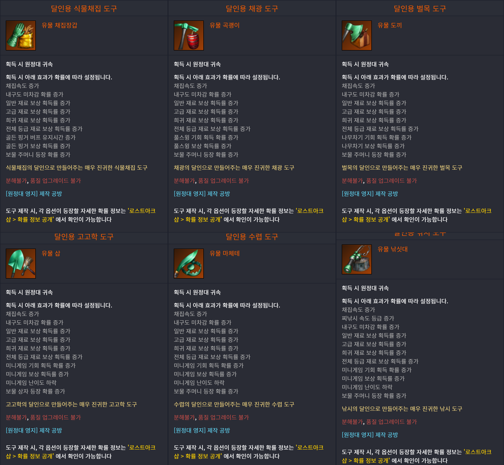
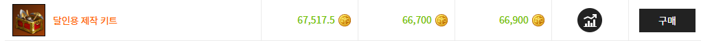
유물 도구를 만들기 위해서는 달인용 제작 키트가 필요한데 가격이 비쌉니다.
일주일 생기를 모두 써도 달인용 제작 키트 2개를 사기가 어렵습니다.
하지만 유물 도구를 만들더라도 필요한 옵션 종류가 많아 한번에 원하는 옵션을 모두 뽑기 어렵고 뽑더라도 막상 수익에서도 큰 차이가 나지는 않습니다.
반면에 전설 도구는 만드는 가격이 싸서 원하는 옵션을 뽑기가 쉽고 수익도 큰 차이가 나지는 않습니다.
수리비도 등급이 높을수록 비싸기 때문에 뉴비는 전설 도구 정도만 뽑아서 하시는걸 추천드립니다.
세계수의 잎
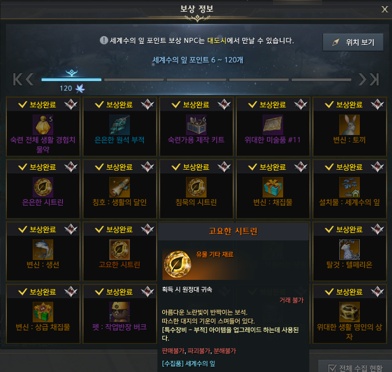
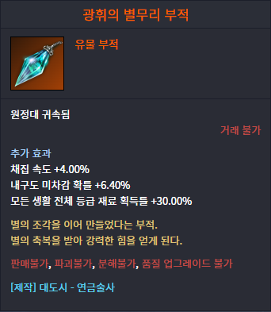
세계수의 잎은 캐릭터의 스펙에 직접적으로 영향을 주는 보상은 없습니다.
주로 생활에 관련된 보상을 받을 수 있고 생활 장비라고 볼 수 있는 생활 부적을 만들 수 있습니다.
생활 종류별로 20개정도의 세계수의 잎을 얻을 수 있어서 전설 등급까지는 어렵지 않게 만들 수 있지만 유물 등급은 최소 4종류 이상의 생활을 해야 합니다.
생활 레벨이 낮은 경우에는 수익이 크지 않기 때문에 부적을 만들기 위해서 낮은 레벨의 생활로 세계수의 잎을 모으는게 손해로 느껴질 수 있습니다.
부적으로 얻을 수 있는 추가 수익이 엄청나게 크거나 한건 아니라서 유물 도구와 마찬가지로 전설 등급만 있어도 괜찮습니다.
도약의 정수
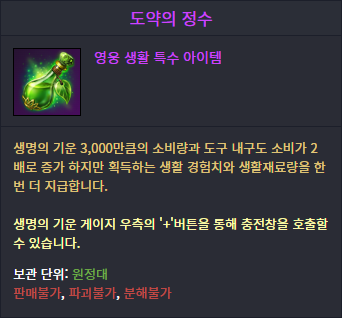
도약의 정수는 생활의 정수 소비량을 2배로 증가시키는 대신 보상을 2번 획득하는 아이템입니다.
똑같은 보상을 2배로 획득하는게 아니라 보상 획득 기회가 2번이 되는거라 방식이 약간 다릅니다.
소모되는 생기 대비 보상은 동일하기 때문에 생기를 쓸 시간이 없으신 분들만 사용하시면 됩니다.
로아샵에서 크리스탈로 구매하는것 보다는 아제나의 축복 보상으로 얻는게 더 효율이 좋습니다.
식물 채집
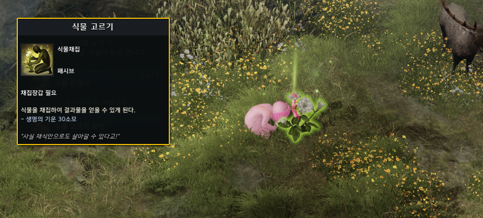
식물 채집은 다른 생활과 다르게 미니게임이 없습니다.
대신 골든 핑거라는 버프를 유지하며 자동으로 추가보상을 획득하는 방식입니다.
다른 생활들과는 다르게 융화 재료를 만드는데 잘 쓰이지 않습니다.
채집 재료는 대부분 정령의 가호를 만드는데 사용하기 때문에 아비도스 들꽃보다 다른 재료들이 더 많이 쓰입니다.
그래서 그런지 신규 레이드 난이도가 높을수록 물약 소비량이 많아서 재료 가격이 올라가는 경향이 있습니다.
식물 채집이 가능한 맵 2곳에서 카오스게이트가 열리기 때문에 항상 채널이 많고 식물 채집을 하는 유저가 많지 않아 경쟁은 거의 없는 편입니다.
골든핑거 발동 시 채집 속도가 빨리지기는 하지만 기본 생기 소모량이 30이기 때문에 생기 소모 속도가 빠른편은 아닙니다.
채광
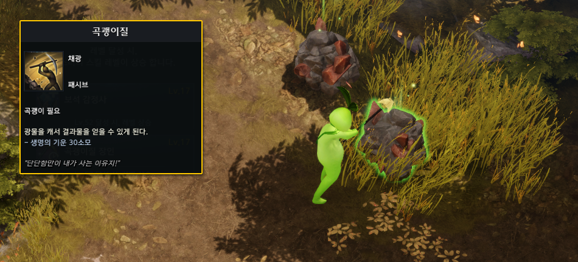
벌목과 비슷한 보상 종류를 갖는 생활이지만 벌목보다 유저수가 적고 배틀 아이템을 만드는데 필요한 재료가 있어 가격이 더 비쌉니다.
빛나는 성스러운 폭탄을 제작할 수 있는데 가끔씩 신규 레이드에서 빛성폭이 필요한 기믹이 나오는 경우 재료 가격이 올라갑니다.
채광이 가능한 맵에 채널이 적고 경쟁이 있다면 달빛 채광사 버프를 유지하기 어려워 효율이 떨어집니다.
하는 사람이 적고 빛성폭 때문인지 재료 가격이 벌목보다 비싸기 때문에 동일 생기를 쓴다면 벌목보다 수익이 좋습니다.
대신 생기 소모 속도는 벌목과는 비교할 수 없을 정도로 느립니다.
벌목
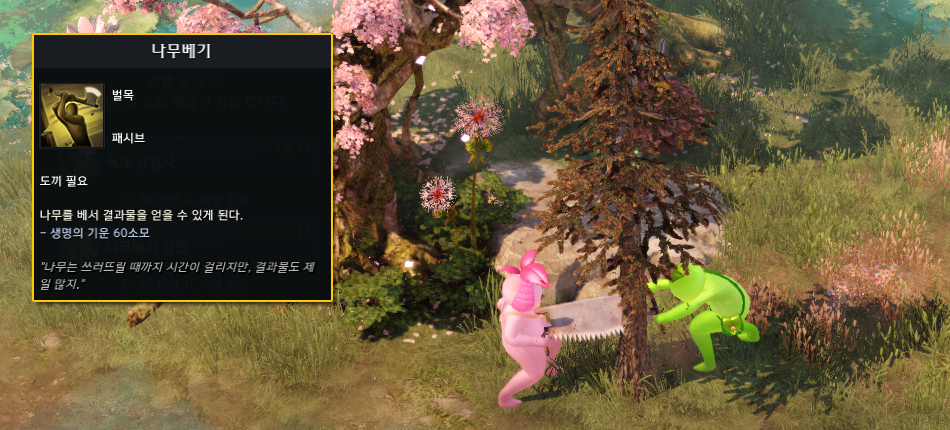
시즌3 기준 유저들이 가장 많이 하는 생활입니다.
벌목은 2인으로 진행할 경우 속도가 빨라지고 생기 소모량이 2배가 돼서 다른 생활이랑 비교도 안되게 빠르게 생기를 쓸 수 있습니다.
희귀 재료인 '튼튼한 목재'는 원정대 영지에서 일반 재료로 교환이 가능하기 때문에 희귀 재료가 가치가 없는 생활(수렵,고고학)에 비해 수익 저점이 높은 편입니다.
그래서 시즌3 기준 대부분의 유저들이 벌목을 합니다.
벌목이 가능한 맵 2곳에 카오스게이트가 열리기 때문에 채널이 항상 많지만 유저수도 많아서 경쟁이 있기는 합니다. 같은 채널에 다른 사람들이 있다면 그냥 채널이동을 하는게 좋습니다.
단점으로 깐부를 구할 때 쌀먹을 만날 확률이 높습니다.
생명의 기운이 원정대 단위이기 때문에 다계정으로 쌀먹을 하는 사람들이 많은데 쌀먹 특성상 정신병자들이 많습니다.
인벤 사사게에 벌목만 검색해봐도 로아에 미친 쌀먹 새끼들이 많다는걸 알 수 있는데 벌목을 하다보면 자주 만나게 됩니다.
팁을 드리자면 깐부 구했는데 펫효과가 없다? 도망가십쇼. 자리 많은데 옆에서 시비건다? 그냥 채널이동 하십쇼. 진짜 로아에서 쌀먹하는 새끼들은 엮이면 피해만 봅니다.
수렵
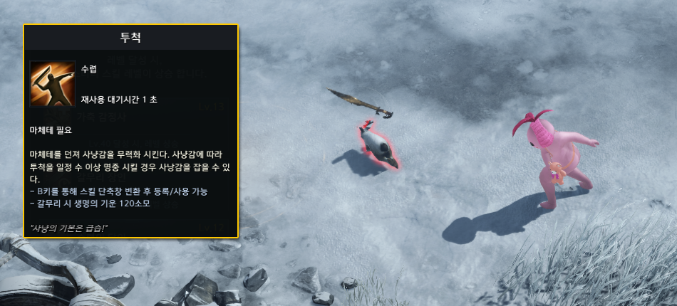
수렵 특성상 몹을 잡고 바로 갈무리를 하지 않아도 갈무리감이 일정 시간 남아있는데 이걸 이용해서 케투스(영웅 등급)를 잡고 갈무리하지 않고 남겨뒀다가 미니게임 기회 획득 후 남겨놓은 케투스에 미니게임을 할 수 있습니다.
다른 생활들의 경우 미니게임 기회 획득 후 보라색을 찾아다니는 방식이지만 수렵은 반대 방식도 가능하기 때문에 높은 확률로 미니게임을 영웅 등급에 털 수 있습니다.
낚시 재료와 함께 요리와 만찬에 재료를 사용하는데 레이드 난이도가 높은 경우 트라이 횟수가 많아지면서 요리와 만찬의 소모량이 늘어나고 수렵 재료가 비싸지는 경우가 있습니다.
얀의 길에 카오스게이트가 나오기 때문에 채널이 많고 유저수가 많지 않아 경쟁은 거의 없는편입니다. 생기 소모 속도는 빠른편은 아닙니다.
고고학
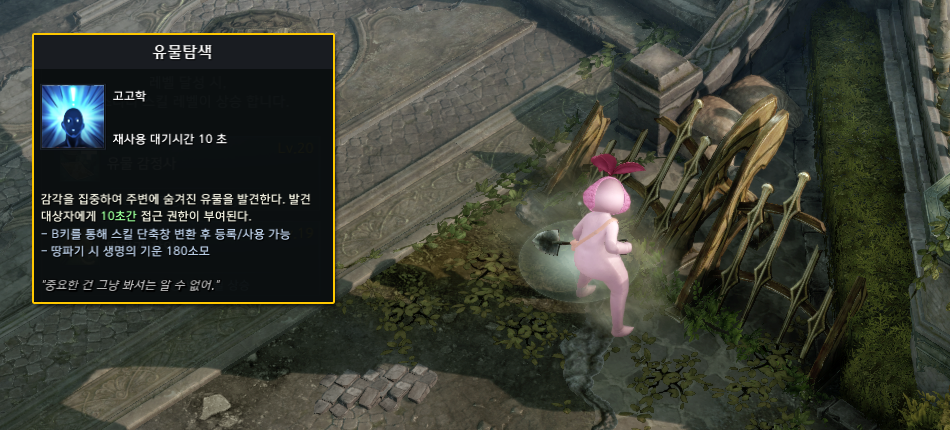
시즌3에는 벌목에 자리를 넘겨줬지만 시즌2까지는 독보적인 1위 생활이었습니다.
아비도스 주둔지에서 고고학이 가능한데 카오스게이트가 나오는 구역에서 젠이 빨라서 그 구역만 뺑뺑이 돌아도 쉬지 않고 생기를 뺄 수 있습니다.
생기 소모 속도는 벌목을 제외하면 가장 빠릅니다.
하지만 희귀 재료가 가치가 없고 재료 가격이 다른 생활에 비해 싸기 때문에 추천을 드리지는 않습니다.
생활 중 유일하게 제작 키트를 얻을 수 있습니다. 유물 등급 제작 키트의 경우 가격이 상당하기 때문에 이걸 노리고 고고학을 하기도 합니다.
사소한거긴 한데 다른 생활들은 30레벨부터 미니게임이 가능하지만 고고학은 20레벨부터 가능합니다.
낚시
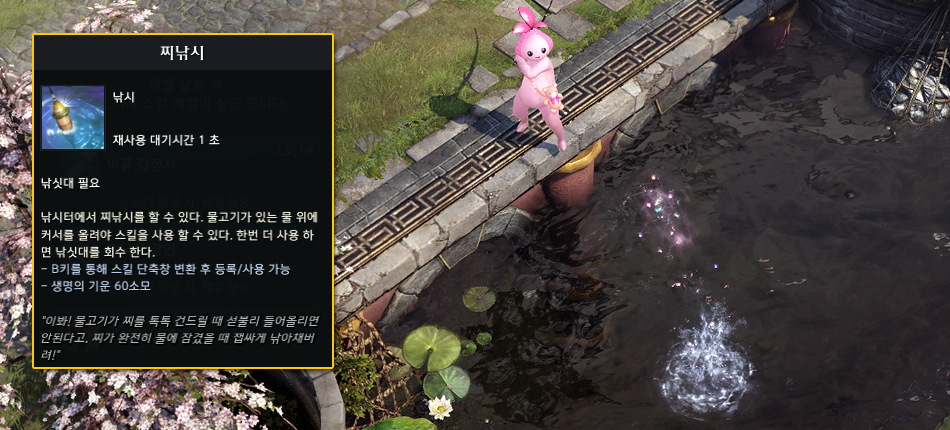
낚시는 매크로 때문에 다른 생활에 비해 보상이 적습니다. 매크로가 어딨어? 라고 생각하신다면 레이크바 낚시터에 한번 가보십쇼.
낚시는 내실용으로만 하는게 좋습니다.
낚시는 경쟁이 없는 대신 생기 소모 속도가 매우 느립니다.
재료 가격은 크게 비싸진 않지만 수렵과 마찬가지로 요리 가격이 올라가면 재료 가격이 같이 올라갑니다.
요약
| 생활 | 생기 소모 | 경쟁 정도 | 핵심 특징 |
|---|---|---|---|
| 벌목 | 매우 빠름 | 보통 | 가장 많이 하는 생활 |
| 고고학 | 빠름 | 보통 | 유물 키트 획득 가능 |
| 식물채집 | 보통 | 낮음 | 융화 재료보다는 물약 만드는데 사용 |
| 수렵 | 보통 | 낮음 | 요리 가격에 따라 재료값이 올라가기도 함 |
| 채광 | 보통 | 낮음 | 빛성폭 가격에 따라 재료값이 올라가기도 함 |
| 낚시 | 매우 느림 | 없음 | 수익 적음. 내실용으로만 |
재료 직접 판매 vs 영지 제작
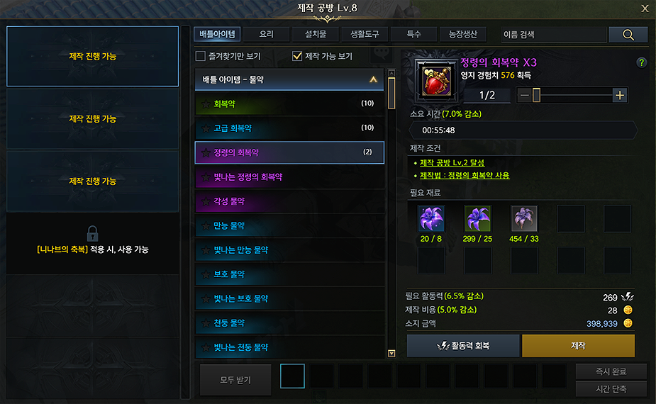
영지에서 생활 재료를 사용해 융화 재료나 배틀 아이템을 제작할 수 있습니다.
영지 제작 시 세팅에 따라 수익이 큰 차이가 나게 됩니다.
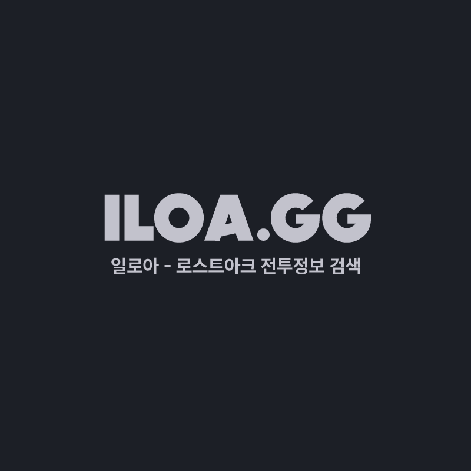
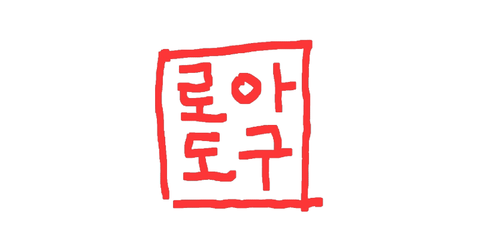
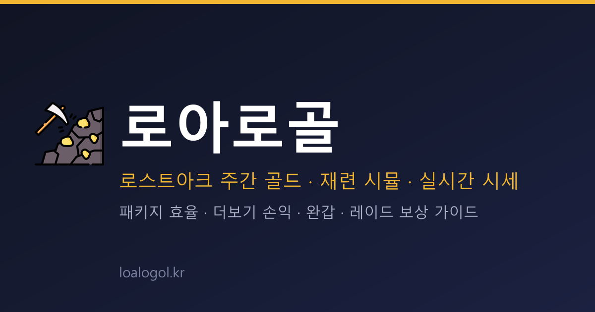

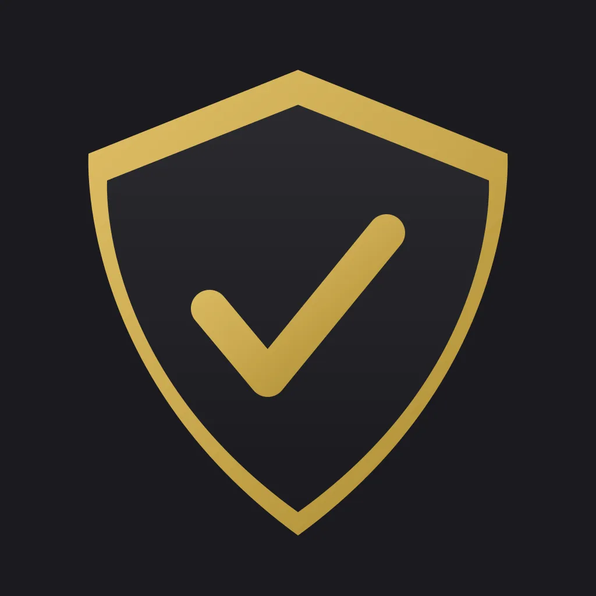
이런 외부 사이트들에서 영지 제작 효율을 찾아보시고 재료를 직접 팔지 영지 제작 후 판매할지 결정하시면 되겠습니다.